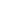

ARIA Toggle Button
Working Example
sample text
ARIA 1.0 References:
State Examples
Not pressed state
Not pressed state - code
<input type="image" alt="highlight off" src="nohighlight.gif" aria-pressed="false">
Pressed state
Pressed state - code
<input type="image" alt="highlight on" src="highlight.gif" aria-pressed="true">
